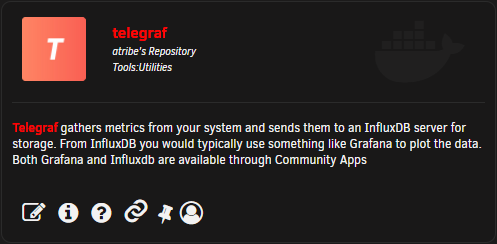

Install Ultimate unRAID Dashboard
This guide will show you how to setup UUD on your unRAID Server. While it does show how to set up most services to get you started with Grafana and UUD, it does assume that you have Plex and supporting applications set up already. This includes, but is not limited to, Plex Media Server, Sonarr, Radarr, and/or Ombi.
Dependencies
- unRAID Plugin: Community Applications
- Docker: InfluxDB
- Docker: Telegraf
- Docker: Grafana
- Docker: Tautulli
- Docker: Varken
- CA Plugin: IPMI Tools
- License: GeoLite2
Guide
Install Community Applications
This is a must have for any unRAID Server. If you already have Community Applications (CA) installed, you can skip to the next step.
On your unRAID server, click on the Plugins tab on your toolbar. You should see a option Enter URL of remote plugin file or local plugin file.
Enter https://raw.githubusercontent.com/Squidly271/community.applications/master/plugins/community.applications.plg and click on the Install button.
You should now see an Apps tab on your toolbar.
Install InfluxDB
Docker Container
Click on the Apps tab in the toolbar.
In the search bar (upper right), search for InfluxDB and you should see one from "atribe". Click the install button on the lower left of the card.

Settings
All of the default settings will be fine though you can customize as you see fit.
| Name | Setting | Notes |
|---|---|---|
| Host Port 1 | 8083 | |
| Host Port 2 | 8086 | This is the port that you will use to access the database |
| Host Path 1 | /mnt/user/appdata/influxdb |

Start Container
Click Apply and make sure the container was set up successfully.
Authentication
By default, InfluxDB has authentication disabled. This means that any application will be able to write data to InfluxDB using any set of credentials. If you would like to set up user authentication, please refer to the influxdata documentation.
Install Telegraf
Attention
This container needs a config file before being set up. Please read these instruction carefully as you will have problems if you do not follow the order of operations.
Docker Container
Click on the Apps tab in the toolbar.
In the search bar (upper right), search for Telegraf and you should see one from "atribe". Click the install button on the lower left of the card.

Settings
So there is a setting you need to make sure are correct in this container: Network Type needs to be set to host.
DO NOT HIT 'Apply' YET!
| Name | Setting | Notes |
|---|---|---|
| Repository | telegraf:latest | You can use the alpine tag, but it is recommended to use latest |
| Post Arguments | /bin/sh -c 'apt update && apt install -y smartmontools && apt install -y lm-sensors && apt install -y nvme-cli && apt install -y ipmitool && telegraf' |
|
| Network Type | host | IT IS IMPORTANT THAT YOU USE HOST! |
| Host Path 1 | /var/run/utmp | |
| Host Path 2 | /var/run/docker.sock | |
| Host Path 3 | / | |
| Host Path 4 | /sys | |
| Host Path 5 | /etc | |
| Host Path 6 | /proc | |
| Host Path 7 | /mnt/user/appdata/telegraf/telegraf.conf | Make note of this directory. We will need it in the next step. |
| Host Path 8 | /run/udev | If this is not here, follow the instructions below to add this. |
| Key 1 | /rootfs/proc | |
| Key 2 | /rootfs/sys | |
| Key 3 | /rootfs/etc | |
| Key 4 | /rootfs |
Warning
DO NOT HIT APPLY TO START THE CONTAINER YET! We need to set up the configuration file first!
Adding /run/udev
If you do not have this in your variables, scroll to the bottom of the page and find the + Add another Path, Port, Variable, Label or Device link just above the Apply, Done, and Save buttons.

In the windows that pops up, enter in the following:
| Name | Setting | Notes |
|---|---|---|
| Config Type | Path | |
| Name | enter in name or leave blank | You can leave this blank if you wish |
| Container Path | /run/udev |
|
| Host Path | /run/udev |
|
| Default Value | /run/udev |
|
| Access Mode | Read/Write | |
| Description | Leave blank | |
| Display | Always | |
| Required | Yes | It will be filled in already so you can leave it on no if you want to. |
| Password Mask | No |

Click on the ADD button.
Warning
DO NOT HIT APPLY TO START THE CONTAINER YET! We need to set up the configuration file first!
telegraf.conf
In your settings, you should have noted a path in the previous step for Host Path 7. You need to navigate to that folder (you will probably have to create the telegraf folder) and place a telegraf.conf file in that folder.
Default Config File
You can find a default telegraf.conf on the official Telegraf GitHub. Raw version.
If you want to edit the default config, here are the edits you need to make:
- Search for [[inputs.net]]
- Enable by removing the
#in the front of the line.
- Enable by removing the
- Search for [[inputs.docker]]
- Enable by removing the
#in the front of the line.
- Enable by removing the
- Search for [[inputs.diskio]]
- Enable by removing the
#in the front of the line. - To use static drive serial numbers in Grafana (for DiskIO queries) do the following:
- Edit telegraf.conf > [[inputs.diskio]] > uncomment the line (remove the #) with device_tags = ["ID_SERIAL"]. Use ID_SERIAL flag in Grafana.
- Now upon booting, you don't have to worry about SD mounts changing.
- You can also set up overrides on the query fields map the serial number to a common disk name like "disk01", etc.
- Enable by removing the
- Search for [[inputs.smart]]
- Enable by removing the
#in the front of the line. - Also enable attributes = true by removing the
#in the front of the line.
- Enable by removing the
- Search for [[inputs.ipmi_sensor]]
- Enable by removing the
#in the front of the line.
- Enable by removing the
- Search for [[inputs.apcupsd]]
- Enable by removing the
#in the front of the line. - In unRAID settings > UPS Settings, make sure Start APC UPS daemon is set to
Yes.
- Enable by removing the
When completed, this file should be placed in the folder that we noted above. (Default is /mnt/user/appdata/telegraf/).
Edited Config File
If you want to just get up and running, you can download an already edited config file from this GitHub Repository. Raw link.
This file should be placed in the folder that we noted above. (Default is /mnt/user/appdata/telegraf/).
Start the Container
Now, we can finally start the container. Click on Apply to start the container.
When you are back on the Docker tab of unRAID, click on the logs button on the far right side of the Telegraf container to open the container logs.
You are waiting for the container to start up fully. You should see something along the lines of:
2021-01-13T14:21:36Z I! Starting Telegraf 1.17.0
2021-01-13T14:21:36Z I! Using config file: /etc/telegraf/telegraf.conf
Install Grafana
Docker Container
Click on the Apps tab in the toolbar.
In the search bar (upper right), search for Grafana and you should see one from "atribe". Click the install button on the lower left of the card.
Settings
So there is a setting you need to make sure are correct in this container: Network Type needs to be set to host.
| Name | Setting | Notes |
|---|---|---|
| Host Port 1 | 3000 | You can leave this default |
| Host Path 1 | /mnt/user/appdata/grafana | You can leave this default |
| Key 1 | ip address | Enter in the ip of your server. |
| Key 2 | enter in password | Enter in the password you would like to use for the admin account. |
Start the Container
Click Apply to start the container.
Info
If you do not care about the media portion of UUD, you can skip the rest of this guide. I would recommend you download UUD 1.4. It has everything this dashboard has but the media monitoring. You can find more information about UUD 1.4 here.
TODO
1.4 link
Install Tautulli
Docker Container
Click on the Apps tab in the toolbar.
In the search bar (upper right), search for Tautulli. There are actually multiple versions: linuxserver, official, and hotio. While any of them should work, I will be using the one from "linuxserver".
Settings
Default settings will work.
| Name | Setting | Notes |
|---|---|---|
| Host Port 1 | 8181 | You can leave this default |
| Host Path 1 | /mnt/user/appdata/tautulli/logs/ | You can leave this default |
| Key 1 | 99 | You can leave this default |
| Key 2 | 100 | You can leave this default |
| AppData Config Path | /mnt/user/appdata/tautulli/config/ | This is found under "Show more settings" |
Start the Container
Click Apply to start the container.
Complete the Tautulli Setup
Click on the Docker tab of unRAID. Left click on the Tautulli icon and click on Web UI.
On the Welcome screen, click on Next.
On the Authentication screen, set the username and password you would like to use to access the administration panel of Tautulli.
On the Plex Account screen, click the Sign In with Plex button. After you authenticate with your Plex account, click the Next button
On the Plex Media Server screen, select your Plex server that has the internal IP. It should start with 172.x.x.x. Fill in the rest of the options as appropriate. Click on the Verify button. You should see next to it Server found! Click the Next button.
On the Activity Logging page, adjust to your Ignore Interval to your liking. Click the Next button.
For the next two screens, click on the Next button.
Finally, click on the Finish button.
Obtain the Tautulli API Key
When you are on the main window of Tautulli, click on the cogs icon () in the upper right corner > settings > Web Interface.
Near the bottom of that page, you should see a section for your API. Either keep this page open, or copy your API key to a text document to use in the Varken Setup.
Obtain MaxMindDB Key
For Tautulli to work correctly, you need to obtain a MaxMind GeoLite license. This is free to do.
1: Sign up for a MaxMind account. Make sure to verify the account.
2: When logged in, click on the My account button in the upper right corner as denoted by the symbol and click on MY ACCOUNT.
3: Click on My License Key from the left side menu.

4: Click on Generate new license key button.
5: Enter in a description. I suggest "Varken".
6: For the prompt under the description asking about using GeoIP Update, select No.
7: Click Confirm.
On the next screen, you will be presented with your license key. Keep this page open for the next step or copy your key to a safe place. If you close the page, you will not be able to see the key again. If this happens, you can create a new key.
Install Varken
Docker Container
Click on the Apps tab in the toolbar.
In the search bar (upper right), search for Varken and you should see one from "Bander". Click the install button on the lower left of the card.
Settings
All of the default settings will work. I do advise you to change the time zone to your correct time zone. A list of time zones can be found here. You would be using the TZ database name column.
Take note of where your config file will be located.
Warning
DO NOT HIT APPLY TO START THE CONTAINER YET! We need to set up the configuration file first!
varken.ini
You need to edit the configuration yourself since it requires API keys. You can find the default varken.ini file on GitHub (Raw version).
The configuration file is broken up in to 2 sections: the global configuration, and the application configuration. You can set up applications and have them not be used in the global configuration.
Generally, it is easier to set up your applications first so you know what to use for the global configuration.
Application Setup
Varken allows to gather metrics for the following applications:
- Sonarr
- Radarr
- Lidarr
- Tautulli
- Ombi
- Sickchill
- Unifi Controller
The only application we are really worried about for UUD is Tautulli. We also want to set Varken up to send the data to InfluxDB. If you would like more information on how to set up the other services, please refer to the Official Varken Documentation.
Create the Config File
Navigate to the appdata folder of your UNRAID server. The default is /mnt/usr/appdata/. You will need to make a Varken folder if one is not created already. The final path should be /mnt/usr/appdata/Varken.
Within that path, create a file called varken.ini, or right click on this link and click on Save link as... and then copy the downloaded file in to your Varken folder.
Open varken.ini in a text editor. (If you are using Windows, DO NOT USE NOTEPAD. Use something like Notepad++ or Visual Studio Code.)
If you created a blank file, copy and paste the following code in to the file:
Trimmed varken.ini
[global]
sonarr_server_ids = false
radarr_server_ids = false
lidarr_server_ids = false
tautulli_server_ids = 1
ombi_server_ids = false
sickchill_server_ids = false
unifi_server_ids = false
maxmind_license_key = xxxxxxxxxxxxxxxx
[influxdb]
url = influxdb.domain.tld
port = 8086
ssl = false
verify_ssl = false
username = root
password = root
[tautulli-1]
url = tautulli.domain.tld:8181
fallback_ip = 1.1.1.1
apikey = xxxxxxxxxxxxxxxx
ssl = false
verify_ssl = false
get_activity = true
get_activity_run_seconds = 30
get_stats = true
get_stats_run_seconds = 3600
If you would like to configure more applications, here is the default varken.ini: (Or right click this link, Save link as..., and save as varken.ini)
Default varken.ini
[global]
sonarr_server_ids = 1,2
radarr_server_ids = 1,2
lidarr_server_ids = false
tautulli_server_ids = 1
ombi_server_ids = 1
sickchill_server_ids = false
unifi_server_ids = false
maxmind_license_key = xxxxxxxxxxxxxxxx
[influxdb]
url = influxdb.domain.tld
port = 8086
ssl = false
verify_ssl = false
username = root
password = root
[tautulli-1]
url = tautulli.domain.tld:8181
fallback_ip = 1.1.1.1
apikey = xxxxxxxxxxxxxxxx
ssl = false
verify_ssl = false
get_activity = true
get_activity_run_seconds = 30
get_stats = true
get_stats_run_seconds = 3600
[sonarr-1]
url = sonarr1.domain.tld:8989
apikey = xxxxxxxxxxxxxxxx
ssl = false
verify_ssl = false
missing_days = 7
missing_days_run_seconds = 300
future_days = 1
future_days_run_seconds = 300
queue = true
queue_run_seconds = 300
[sonarr-2]
url = sonarr2.domain.tld:8989
apikey = yyyyyyyyyyyyyyyy
ssl = false
verify_ssl = false
missing_days = 7
missing_days_run_seconds = 300
future_days = 1
future_days_run_seconds = 300
queue = true
queue_run_seconds = 300
[radarr-1]
url = radarr1.domain.tld
apikey = xxxxxxxxxxxxxxxx
ssl = false
verify_ssl = false
queue = true
queue_run_seconds = 300
get_missing = true
get_missing_run_seconds = 300
[radarr-2]
url = radarr2.domain.tld
apikey = yyyyyyyyyyyyyyyy
ssl = false
verify_ssl = false
queue = true
queue_run_seconds = 300
get_missing = true
get_missing_run_seconds = 300
[lidarr-1]
url = lidarr1.domain.tld:8686
apikey = xxxxxxxxxxxxxxxx
ssl = false
verify_ssl = false
missing_days = 30
missing_days_run_seconds = 300
future_days = 30
future_days_run_seconds = 300
queue = true
queue_run_seconds = 300
[ombi-1]
url = ombi.domain.tld
apikey = xxxxxxxxxxxxxxxx
ssl = false
verify_ssl = false
get_request_type_counts = true
request_type_run_seconds = 300
get_request_total_counts = true
request_total_run_seconds = 300
get_issue_status_counts = true
issue_status_run_seconds = 300
[sickchill-1]
url = sickchill.domain.tld:8081
apikey = xxxxxxxxxxxxxxxx
ssl = false
verify_ssl = false
get_missing = true
get_missing_run_seconds = 300
[unifi-1]
url = unifi.domain.tld:8443
username = ubnt
password = ubnt
site = default
usg_name = MyRouter
ssl = false
verify_ssl = false
get_usg_stats_run_seconds = 300
InfluxDB
The code block we are interested in for InfluxDB is the following:
1 2 3 4 5 6 7 | |
We are focusing mainly on line 2 from the code above. You want to enter in the ip address of your IDB instance. If you are running everything on the same machine, you should be able to use localhost or 127.0.0.1 for the IP address.
| Line # | Setting | Notes |
|---|---|---|
| 2 | IP | Change to the IP address of your IDB instance |
| 3 | 8086 | Change to your IDB port. 8086 is default. |
| 4 | false | |
| 5 | false | |
| 6 | root | If you have IDB set up with authentication, you put the username here. More Info |
| 7 | root | If you have IDB set up with authentication, you put the password here. More Info |
Tautulli
The next block we are going to take a look at is the tautulli-1 block:
1 2 3 4 5 6 7 8 9 10 | |
localhost or 127.0.0.1 for the IP address.
| Line # | Setting | Input | Notes |
|---|---|---|---|
| 2 | url | IP:port | Change to the IP address and port of your Tautulli instance. Default port is 8181 |
| 3 | fallback_ip | Your public IP | You should change this to your public IP address.1 |
| 4 | apikey | Enter API key | Enter in your Tautulli API key2. Replace all the x's |
| 5 | ssl | false | Set to true if you are using SSL to access Tautulli. If you are using it over a local network, you can leave this false. |
| 6 | verify_ssl | false | Set to true if you are using SSL to access Tautulli. If you are using it over a local network, you can leave this false. |
| 7 | get_activity | true | Pull stream information from Tautulli. |
| 8 | get_activity_run_seconds | 30 | How often in seconds to pull activity from Tautulli. Default = 30 |
| 9 | get_stats | true | Pull library information from Tautulli. |
| 10 | get_stats_run_seconds | 3600 | How often in seconds to pull stats from Tautulli. Default = 3600 (5 min) |
1: For fallback_ip, you should use your public IP address. According to the Varken Documentation, the fallback_ip is used for location lookup when there is a failure to determine a location which generally happens when streaming over your local network. You can get your IP address by visiting WhatIsMyIP.com. Note: If you are using a VPN, it will use the location your VPN is connected to.
2: You can obtain your Tautulli API key by navigating to your Tautulli instance. Go to Settings ( in upper right > Settings) > Web Interface > API Key. Replace the "xxxxxxxxxxxxxxxx" with your API key.
Global Configuration
Now that we have all of our applications set up to use UUD, we need to configure the global configuration.
1 2 3 4 5 6 7 8 9 | |
The two lines we are focusing on are lines 5 and 9.
| Line # | Setting | Input | Notes |
|---|---|---|---|
| 5 | tautulli_server_ids | 1 | We can leave this line alone |
| 9 | maxmind_license_key | MaxMind license key | Enter in the MaxMind license key that you obtained in #Obtain MaxMindDB License Key. |
For the rest of the settings, we need to disable the rest of the services unless you have set them up.
To disable the rest of the services, replace all of the numbers following them with false.
In the end, your global configuration should look along the lines of:
1 2 3 4 5 6 7 8 9 | |
Final Configuration File
When you complete everything above, save the file. Now you can start the container.
Start the Container
Now that you have your configuration file set and in the proper place, we can go back to the container creation screen of Varken and click Apply to create and start the container.
Ultimate UNRIAD Dashboard
TODO
Find out if we are using github to distribute files or the unRAID forums
Go to the Ultimate unRAID Dashboard forum Topic and scroll to the bottom of the first post. You will see a file attachment for VERSION 1.5. Click on the file attachment to download the JSON file.
Right click on this link and click "Save target as..."
Configuring Grafana
In the Docker tab in unRAID, click on the Grafana icon and then select WebUI.
When you are asked to log in, the default user is "admin" and the password is the one you set up while setting up Grafana.
Adding Data Sources
In the left menu, hover over the cog icon () and then click on Data Sources.
On the screen that opens up, click on Add Data Source.
On the next screen, select "InfluxDB".
Telegraf
Fill in the settings. If the setting is not in the table below, you can leave it default.
| Name | Setting | Notes |
|---|---|---|
| Name | InfluxDB | You can name this what you want. I suggest InfluxDB or Telegraf |
| Query Language | InfluxQL | |
| HTML | ||
| URL | http://localhost:8686 | Set this to the IP address of your server |
| InfluxDB Details | ||
| Database | telegraf | Case sensitive |
| User | Leave Blank | Put in your username if you set one up. Setting one up is beyond the scope of this guide. |
| Password | Leave Blank | Put in your password if you set one up. Setting one up is beyond the scope of this guide. |
Click on the Save & Test button and make sure you get a green bar just above saying Data source is working.
Next, either click on the Back button or go to the left side of the screen, hover over the cog icon () and then click on Data Sources. Click on Add data source.
Varken
Fill in the settings. If the setting is not in the table below, you can leave it default.
| Name | Setting | Notes |
|---|---|---|
| Name | Varken | You can name this what you want. I suggest Varken |
| Query Language | InfluxQL | |
| HTML | ||
| URL | http://localhost:8686 | Set this to the IP address of your server |
| InfluxDB Details | ||
| Database | varken | Case sensitive |
| User | Leave Blank | Put in your username if you set one up. Setting one up is beyond the scope of this guide. |
| Password | Leave Blank | Put in your password if you set one up. Setting one up is beyond the scope of this guide. |
Click on the Save & Test button and make sure you get a green bar just above saying Data source is working.
Uploading UUD
On the left side of the screen, hover over the icon and then click on the Import button.
Select the json file you downloaded here. If you want to rename your dashboard, now is the time to do it. Otherwise, click Import.
You should now be directed to your new dashboard!